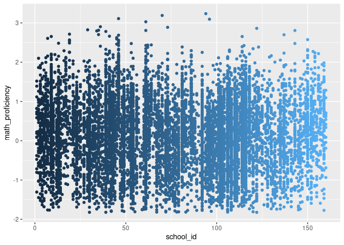

Example
library(ivd)
library(data.table)Data
The illustration uses openly accessible data from The Basic Education Evaluation System (Saeb) conducted by Brazil’s National Institute for Educational Studies and Research (Inep), available at https://www.gov.br/inep/pt-br/areas-de-atuacao/avaliacao-e-exames-educacionais/saeb/resultados. It is also available as the saeb dataset in the ivd package.
Separate within- from between-school effects. That is, besides student_ses, compute school_ses.
## Grand mean center student SES
#saeb$student_ses <- c(scale(saeb$student_ses, scale = FALSE))
## Calculate school-level SES
school_ses <- saeb[, .(school_ses = mean(student_ses, na.rm = TRUE)), by = school_id]
## Join the school_ses back to the original dataset
saeb <- saeb[school_ses, on = "school_id"]
## Define student level SES as deviation from the school SES
saeb$student_ses <- saeb$student_ses - saeb$school_ses
## Grand mean center school ses
saeb$school_ses <- c(scale(saeb$school_ses, scale = FALSE))Illustration of school level variability:
library(ggplot2)
plot0 <- ggplot( data = saeb, aes( x = school_id, y = math_proficiency) )
plot0 + geom_point(aes(color = school_id), show.legend = FALSE)
Estimate Model
We will predict math_proficiency which is a standardized variable capturing math proficiency at the end of grade 12.
Both, location (means) and scale (residual variances) are modeled as a function of student and school SES. Note that the formula objects for both location and scale follow lme4 notation.
out <- ivd(location_formula = math_proficiency ~ student_ses * school_ses + (1|school_id),
scale_formula = ~ student_ses * school_ses + (1|school_id),
data = saeb,
niter = 3000, nburnin = 5000, WAIC = TRUE, workers = 6)The summary shows the fixed and random effects and it returns all posterior inclusion probabilities (PIP) for each one of the 160 schools’ residual variance random effects. The PIP returns the probability of a school belonging to the slab, that is, the probability of the model having to include the random scale effect.
In other words, large PIP’s indicate schools that are substantially deviating from the fixed scale effects either because they are much more or much less variable compared to other schools in math proficiency.
One can readily convert those PIP’s to odds, indicating that a school with a PIP = .75 is three times as likely to belonging to the slab than belonging to the spike. With an .50 inclusion prior, these odds can be readily interpreted as Bayes Factors.
s_out <- summary(out)
## use summary(out, pip = "model") to omit PIPs from the summary table
#> Summary statistics for ivd model:
#> Chains (workers): 6
#>
#> Mean SD Time-series SE 2.5% 50% 97.5%
#> R[scl_Intc, Intc] -0.700 0.178 0.007 -0.960 -0.726 -0.289
#> Intc 0.129 0.024 0.001 0.083 0.129 0.175
#> student_ses 0.082 0.010 0.000 0.063 0.082 0.100
#> school_ses 0.675 0.082 0.004 0.512 0.675 0.838
#> student_ses:school_ses -0.023 0.039 0.000 -0.099 -0.023 0.055
#> sd_Intc 0.269 0.020 0.001 0.233 0.268 0.310
#> sd_scl_Intc 0.080 0.015 0.000 0.052 0.079 0.112
#> pip[Intc, 1] 0.464 0.499 0.004 0.000 0.000 1.000
#> pip[Intc, 2] 0.483 0.500 0.004 0.000 0.000 1.000
#> pip[Intc, 3] 0.457 0.498 0.004 0.000 0.000 1.000
#> pip[Intc, 4] 0.488 0.500 0.004 0.000 0.000 1.000
#> pip[Intc, 5] 0.527 0.499 0.005 0.000 1.000 1.000
#> pip[Intc, 6] 0.421 0.494 0.004 0.000 0.000 1.000
#> pip[Intc, 7] 0.400 0.490 0.005 0.000 0.000 1.000
#> pip[Intc, 8] 0.455 0.498 0.004 0.000 0.000 1.000
#> pip[Intc, 9] 0.988 0.111 0.002 1.000 1.000 1.000
#> pip[Intc, 10] 0.447 0.497 0.004 0.000 0.000 1.000
#> pip[Intc, 11] 0.561 0.496 0.004 0.000 1.000 1.000
#> pip[Intc, 12] 0.354 0.478 0.004 0.000 0.000 1.000
#> pip[Intc, 13] 0.478 0.500 0.005 0.000 0.000 1.000
#> pip[Intc, 14] 0.593 0.491 0.006 0.000 1.000 1.000
#> pip[Intc, 15] 0.510 0.500 0.004 0.000 1.000 1.000
#> pip[Intc, 16] 0.484 0.500 0.004 0.000 0.000 1.000
#> pip[Intc, 17] 0.417 0.493 0.004 0.000 0.000 1.000
#> pip[Intc, 18] 0.531 0.499 0.004 0.000 1.000 1.000
#> pip[Intc, 19] 0.232 0.422 0.004 0.000 0.000 1.000
#> pip[Intc, 20] 0.520 0.500 0.004 0.000 1.000 1.000
#> pip[Intc, 21] 0.350 0.477 0.005 0.000 0.000 1.000
#> pip[Intc, 22] 0.555 0.497 0.005 0.000 1.000 1.000
#> pip[Intc, 23] 0.498 0.500 0.004 0.000 0.000 1.000
#> pip[Intc, 24] 0.474 0.499 0.004 0.000 0.000 1.000
#> pip[Intc, 25] 0.467 0.499 0.004 0.000 0.000 1.000
#> pip[Intc, 26] 0.512 0.500 0.004 0.000 1.000 1.000
#> pip[Intc, 27] 0.440 0.496 0.004 0.000 0.000 1.000
#> pip[Intc, 28] 0.387 0.487 0.004 0.000 0.000 1.000
#> pip[Intc, 29] 0.489 0.500 0.004 0.000 0.000 1.000
#> pip[Intc, 30] 0.461 0.499 0.005 0.000 0.000 1.000
#> pip[Intc, 31] 0.462 0.499 0.004 0.000 0.000 1.000
#> pip[Intc, 32] 0.480 0.500 0.005 0.000 0.000 1.000
#> pip[Intc, 33] 0.493 0.500 0.004 0.000 0.000 1.000
#> pip[Intc, 34] 0.535 0.499 0.004 0.000 1.000 1.000
#> pip[Intc, 35] 0.650 0.477 0.006 0.000 1.000 1.000
#> pip[Intc, 36] 0.352 0.478 0.006 0.000 0.000 1.000
#> pip[Intc, 37] 0.470 0.499 0.004 0.000 0.000 1.000
#> pip[Intc, 38] 0.446 0.497 0.004 0.000 0.000 1.000
#> pip[Intc, 39] 0.700 0.458 0.008 0.000 1.000 1.000
#> pip[Intc, 40] 0.455 0.498 0.004 0.000 0.000 1.000
#> pip[Intc, 41] 0.627 0.484 0.009 0.000 1.000 1.000
#> pip[Intc, 42] 0.453 0.498 0.004 0.000 0.000 1.000
#> pip[Intc, 43] 0.408 0.491 0.004 0.000 0.000 1.000
#> pip[Intc, 44] 0.439 0.496 0.004 0.000 0.000 1.000
#> pip[Intc, 45] 0.436 0.496 0.004 0.000 0.000 1.000
#> pip[Intc, 46] 0.999 0.028 0.000 1.000 1.000 1.000
#> pip[Intc, 47] 0.465 0.499 0.004 0.000 0.000 1.000
#> pip[Intc, 48] 0.613 0.487 0.004 0.000 1.000 1.000
#> pip[Intc, 49] 0.492 0.500 0.005 0.000 0.000 1.000
#> pip[Intc, 50] 0.520 0.500 0.004 0.000 1.000 1.000
#> pip[Intc, 51] 0.475 0.499 0.004 0.000 0.000 1.000
#> pip[Intc, 52] 0.541 0.498 0.004 0.000 1.000 1.000
#> pip[Intc, 53] 0.830 0.376 0.005 0.000 1.000 1.000
#> pip[Intc, 54] 0.612 0.487 0.004 0.000 1.000 1.000
#> pip[Intc, 55] 0.391 0.488 0.004 0.000 0.000 1.000
#> pip[Intc, 56] 0.472 0.499 0.004 0.000 0.000 1.000
#> pip[Intc, 57] 0.620 0.485 0.004 0.000 1.000 1.000
#> pip[Intc, 58] 0.395 0.489 0.004 0.000 0.000 1.000
#> pip[Intc, 59] 0.424 0.494 0.004 0.000 0.000 1.000
#> pip[Intc, 60] 0.514 0.500 0.004 0.000 1.000 1.000
#> pip[Intc, 61] 0.289 0.453 0.005 0.000 0.000 1.000
#> pip[Intc, 62] 0.420 0.494 0.004 0.000 0.000 1.000
#> pip[Intc, 63] 0.501 0.500 0.004 0.000 1.000 1.000
#> pip[Intc, 64] 0.738 0.440 0.004 0.000 1.000 1.000
#> pip[Intc, 65] 0.485 0.500 0.004 0.000 0.000 1.000
#> pip[Intc, 66] 0.633 0.482 0.005 0.000 1.000 1.000
#> pip[Intc, 67] 0.341 0.474 0.004 0.000 0.000 1.000
#> pip[Intc, 68] 0.354 0.478 0.005 0.000 0.000 1.000
#> pip[Intc, 69] 0.448 0.497 0.004 0.000 0.000 1.000
#> pip[Intc, 70] 0.394 0.489 0.006 0.000 0.000 1.000
#> pip[Intc, 71] 0.382 0.486 0.004 0.000 0.000 1.000
#> pip[Intc, 72] 0.378 0.485 0.004 0.000 0.000 1.000
#> pip[Intc, 73] 0.376 0.484 0.007 0.000 0.000 1.000
#> pip[Intc, 74] 0.499 0.500 0.004 0.000 0.000 1.000
#> pip[Intc, 75] 0.462 0.499 0.004 0.000 0.000 1.000
#> pip[Intc, 76] 0.460 0.498 0.004 0.000 0.000 1.000
#> pip[Intc, 77] 0.467 0.499 0.004 0.000 0.000 1.000
#> pip[Intc, 78] 0.438 0.496 0.004 0.000 0.000 1.000
#> pip[Intc, 79] 0.385 0.487 0.004 0.000 0.000 1.000
#> pip[Intc, 80] 0.513 0.500 0.004 0.000 1.000 1.000
#> pip[Intc, 81] 0.502 0.500 0.005 0.000 1.000 1.000
#> pip[Intc, 82] 0.519 0.500 0.004 0.000 1.000 1.000
#> pip[Intc, 83] 0.498 0.500 0.004 0.000 0.000 1.000
#> pip[Intc, 84] 0.509 0.500 0.004 0.000 1.000 1.000
#> pip[Intc, 85] 0.473 0.499 0.004 0.000 0.000 1.000
#> pip[Intc, 86] 0.529 0.499 0.004 0.000 1.000 1.000
#> pip[Intc, 87] 0.709 0.454 0.007 0.000 1.000 1.000
#> pip[Intc, 88] 0.473 0.499 0.004 0.000 0.000 1.000
#> pip[Intc, 89] 0.536 0.499 0.004 0.000 1.000 1.000
#> pip[Intc, 90] 0.488 0.500 0.004 0.000 0.000 1.000
#> pip[Intc, 91] 0.437 0.496 0.004 0.000 0.000 1.000
#> pip[Intc, 92] 0.723 0.448 0.005 0.000 1.000 1.000
#> pip[Intc, 93] 0.445 0.497 0.004 0.000 0.000 1.000
#> pip[Intc, 94] 0.478 0.500 0.004 0.000 0.000 1.000
#> pip[Intc, 95] 0.747 0.435 0.004 0.000 1.000 1.000
#> pip[Intc, 96] 0.449 0.497 0.004 0.000 0.000 1.000
#> pip[Intc, 97] 0.346 0.476 0.004 0.000 0.000 1.000
#> pip[Intc, 98] 0.468 0.499 0.004 0.000 0.000 1.000
#> pip[Intc, 99] 0.552 0.497 0.004 0.000 1.000 1.000
#> pip[Intc, 100] 0.445 0.497 0.004 0.000 0.000 1.000
#> pip[Intc, 101] 0.431 0.495 0.004 0.000 0.000 1.000
#> pip[Intc, 102] 0.503 0.500 0.006 0.000 1.000 1.000
#> pip[Intc, 103] 0.379 0.485 0.004 0.000 0.000 1.000
#> pip[Intc, 104] 0.452 0.498 0.004 0.000 0.000 1.000
#> pip[Intc, 105] 0.481 0.500 0.004 0.000 0.000 1.000
#> pip[Intc, 106] 0.442 0.497 0.005 0.000 0.000 1.000
#> pip[Intc, 107] 0.519 0.500 0.004 0.000 1.000 1.000
#> pip[Intc, 108] 0.544 0.498 0.007 0.000 1.000 1.000
#> pip[Intc, 109] 0.536 0.499 0.004 0.000 1.000 1.000
#> pip[Intc, 110] 0.392 0.488 0.004 0.000 0.000 1.000
#> pip[Intc, 111] 0.446 0.497 0.004 0.000 0.000 1.000
#> pip[Intc, 112] 0.462 0.499 0.005 0.000 0.000 1.000
#> pip[Intc, 113] 0.634 0.482 0.004 0.000 1.000 1.000
#> pip[Intc, 114] 0.900 0.300 0.003 0.000 1.000 1.000
#> pip[Intc, 115] 0.813 0.390 0.005 0.000 1.000 1.000
#> pip[Intc, 116] 0.459 0.498 0.005 0.000 0.000 1.000
#> pip[Intc, 117] 0.423 0.494 0.004 0.000 0.000 1.000
#> pip[Intc, 118] 0.394 0.489 0.004 0.000 0.000 1.000
#> pip[Intc, 119] 0.490 0.500 0.004 0.000 0.000 1.000
#> pip[Intc, 120] 0.566 0.496 0.004 0.000 1.000 1.000
#> pip[Intc, 121] 0.319 0.466 0.005 0.000 0.000 1.000
#> pip[Intc, 122] 0.529 0.499 0.008 0.000 1.000 1.000
#> pip[Intc, 123] 0.579 0.494 0.004 0.000 1.000 1.000
#> pip[Intc, 124] 0.755 0.430 0.004 0.000 1.000 1.000
#> pip[Intc, 125] 0.471 0.499 0.004 0.000 0.000 1.000
#> pip[Intc, 126] 0.502 0.500 0.004 0.000 1.000 1.000
#> pip[Intc, 127] 0.559 0.497 0.004 0.000 1.000 1.000
#> pip[Intc, 128] 0.524 0.499 0.004 0.000 1.000 1.000
#> pip[Intc, 129] 0.412 0.492 0.004 0.000 0.000 1.000
#> pip[Intc, 130] 0.460 0.498 0.004 0.000 0.000 1.000
#> pip[Intc, 131] 0.569 0.495 0.004 0.000 1.000 1.000
#> pip[Intc, 132] 0.394 0.489 0.004 0.000 0.000 1.000
#> pip[Intc, 133] 0.346 0.476 0.004 0.000 0.000 1.000
#> pip[Intc, 134] 0.510 0.500 0.004 0.000 1.000 1.000
#> pip[Intc, 135] 0.429 0.495 0.004 0.000 0.000 1.000
#> pip[Intc, 136] 0.390 0.488 0.004 0.000 0.000 1.000
#> pip[Intc, 137] 0.449 0.497 0.004 0.000 0.000 1.000
#> pip[Intc, 138] 0.442 0.497 0.004 0.000 0.000 1.000
#> pip[Intc, 139] 0.415 0.493 0.004 0.000 0.000 1.000
#> pip[Intc, 140] 0.574 0.495 0.004 0.000 1.000 1.000
#> pip[Intc, 141] 0.515 0.500 0.004 0.000 1.000 1.000
#> pip[Intc, 142] 0.472 0.499 0.004 0.000 0.000 1.000
#> pip[Intc, 143] 0.414 0.493 0.004 0.000 0.000 1.000
#> pip[Intc, 144] 0.477 0.499 0.004 0.000 0.000 1.000
#> pip[Intc, 145] 0.446 0.497 0.004 0.000 0.000 1.000
#> pip[Intc, 146] 0.455 0.498 0.004 0.000 0.000 1.000
#> pip[Intc, 147] 0.488 0.500 0.004 0.000 0.000 1.000
#> pip[Intc, 148] 0.635 0.481 0.004 0.000 1.000 1.000
#> pip[Intc, 149] 0.710 0.454 0.004 0.000 1.000 1.000
#> pip[Intc, 150] 0.382 0.486 0.005 0.000 0.000 1.000
#> pip[Intc, 151] 0.467 0.499 0.004 0.000 0.000 1.000
#> pip[Intc, 152] 0.467 0.499 0.004 0.000 0.000 1.000
#> pip[Intc, 153] 0.770 0.421 0.004 0.000 1.000 1.000
#> pip[Intc, 154] 0.350 0.477 0.005 0.000 0.000 1.000
#> pip[Intc, 155] 0.422 0.494 0.004 0.000 0.000 1.000
#> pip[Intc, 156] 0.588 0.492 0.004 0.000 1.000 1.000
#> pip[Intc, 157] 0.537 0.499 0.004 0.000 1.000 1.000
#> pip[Intc, 158] 0.457 0.498 0.004 0.000 0.000 1.000
#> pip[Intc, 159] 0.479 0.500 0.004 0.000 0.000 1.000
#> pip[Intc, 160] 0.520 0.500 0.004 0.000 1.000 1.000
#> scl_Intc -0.234 0.008 0.000 -0.251 -0.234 -0.218
#> scl_student_ses 0.031 0.009 0.000 0.014 0.031 0.048
#> scl_school_ses 0.120 0.034 0.001 0.053 0.121 0.187
#> scl_student_ses:school_ses 0.075 0.036 0.001 0.004 0.075 0.145
#> n_eff R-hat
#> R[scl_Intc, Intc] 472 1.012
#> Intc 209 1.032
#> student_ses 17766 1.000
#> school_ses 263 1.009
#> student_ses:school_ses 17916 1.000
#> sd_Intc 354 1.016
#> sd_scl_Intc 941 1.004
#> pip[Intc, 1] 14591 1.000
#> pip[Intc, 2] 16415 1.000
#> pip[Intc, 3] 14113 1.000
#> pip[Intc, 4] 11461 1.000
#> pip[Intc, 5] 10280 1.000
#> pip[Intc, 6] 13756 1.000
#> pip[Intc, 7] 8699 1.001
#> pip[Intc, 8] 14733 1.000
#> pip[Intc, 9] 3398 1.001
#> pip[Intc, 10] 17264 1.000
#> pip[Intc, 11] 9930 1.000
#> pip[Intc, 12] 9956 1.000
#> pip[Intc, 13] 9057 1.000
#> pip[Intc, 14] 5870 1.000
#> pip[Intc, 15] 17721 1.000
#> pip[Intc, 16] 16726 1.000
#> pip[Intc, 17] 14119 1.001
#> pip[Intc, 18] 14655 1.000
#> pip[Intc, 19] 7166 1.000
#> pip[Intc, 20] 15730 1.000
#> pip[Intc, 21] 6481 1.001
#> pip[Intc, 22] 10858 1.000
#> pip[Intc, 23] 13034 1.000
#> pip[Intc, 24] 17445 1.000
#> pip[Intc, 25] 17480 1.000
#> pip[Intc, 26] 16512 1.000
#> pip[Intc, 27] 13083 1.000
#> pip[Intc, 28] 10194 1.000
#> pip[Intc, 29] 14094 1.000
#> pip[Intc, 30] 10431 1.000
#> pip[Intc, 31] 9753 1.000
#> pip[Intc, 32] 11014 1.000
#> pip[Intc, 33] 15381 1.000
#> pip[Intc, 34] 15019 1.000
#> pip[Intc, 35] 3920 1.001
#> pip[Intc, 36] 6093 1.000
#> pip[Intc, 37] 16205 1.000
#> pip[Intc, 38] 14204 1.000
#> pip[Intc, 39] 1549 1.005
#> pip[Intc, 40] 18323 1.000
#> pip[Intc, 41] 2186 1.001
#> pip[Intc, 42] 13533 1.000
#> pip[Intc, 43] 13935 1.000
#> pip[Intc, 44] 17038 1.000
#> pip[Intc, 45] 14044 1.000
#> pip[Intc, 46] 18150 1.000
#> pip[Intc, 47] 17353 1.000
#> pip[Intc, 48] 11974 1.000
#> pip[Intc, 49] 7463 1.000
#> pip[Intc, 50] 19360 1.000
#> pip[Intc, 51] 16418 1.000
#> pip[Intc, 52] 14630 1.000
#> pip[Intc, 53] 6004 1.001
#> pip[Intc, 54] 9146 1.000
#> pip[Intc, 55] 13758 1.000
#> pip[Intc, 56] 13401 1.000
#> pip[Intc, 57] 13267 1.000
#> pip[Intc, 58] 13056 1.000
#> pip[Intc, 59] 15871 1.000
#> pip[Intc, 60] 16342 1.000
#> pip[Intc, 61] 7335 1.000
#> pip[Intc, 62] 15103 1.000
#> pip[Intc, 63] 17250 1.000
#> pip[Intc, 64] 6816 1.000
#> pip[Intc, 65] 17951 1.000
#> pip[Intc, 66] 10095 1.000
#> pip[Intc, 67] 8620 1.001
#> pip[Intc, 68] 8943 1.001
#> pip[Intc, 69] 16563 1.000
#> pip[Intc, 70] 5901 1.000
#> pip[Intc, 71] 13409 1.001
#> pip[Intc, 72] 12320 1.000
#> pip[Intc, 73] 4379 1.001
#> pip[Intc, 74] 11549 1.000
#> pip[Intc, 75] 18168 1.000
#> pip[Intc, 76] 17905 1.000
#> pip[Intc, 77] 15663 1.000
#> pip[Intc, 78] 15441 1.000
#> pip[Intc, 79] 13974 1.000
#> pip[Intc, 80] 18596 1.000
#> pip[Intc, 81] 11394 1.000
#> pip[Intc, 82] 12786 1.000
#> pip[Intc, 83] 15032 1.000
#> pip[Intc, 84] 17899 1.000
#> pip[Intc, 85] 14621 1.000
#> pip[Intc, 86] 13956 1.000
#> pip[Intc, 87] 1967 1.001
#> pip[Intc, 88] 11240 1.000
#> pip[Intc, 89] 17312 1.000
#> pip[Intc, 90] 16570 1.000
#> pip[Intc, 91] 14377 1.000
#> pip[Intc, 92] 6995 1.001
#> pip[Intc, 93] 13485 1.000
#> pip[Intc, 94] 17610 1.000
#> pip[Intc, 95] 7141 1.001
#> pip[Intc, 96] 14815 1.000
#> pip[Intc, 97] 11906 1.000
#> pip[Intc, 98] 14688 1.000
#> pip[Intc, 99] 15031 1.000
#> pip[Intc, 100] 17152 1.000
#> pip[Intc, 101] 12469 1.000
#> pip[Intc, 102] 7327 1.001
#> pip[Intc, 103] 11742 1.000
#> pip[Intc, 104] 15047 1.000
#> pip[Intc, 105] 13660 1.000
#> pip[Intc, 106] 10245 1.000
#> pip[Intc, 107] 10306 1.000
#> pip[Intc, 108] 3401 1.001
#> pip[Intc, 109] 15382 1.000
#> pip[Intc, 110] 12295 1.000
#> pip[Intc, 111] 11800 1.000
#> pip[Intc, 112] 9521 1.000
#> pip[Intc, 113] 14359 1.000
#> pip[Intc, 114] 5174 1.000
#> pip[Intc, 115] 4864 1.001
#> pip[Intc, 116] 8643 1.000
#> pip[Intc, 117] 15629 1.000
#> pip[Intc, 118] 12572 1.000
#> pip[Intc, 119] 17473 1.000
#> pip[Intc, 120] 15443 1.001
#> pip[Intc, 121] 8601 1.000
#> pip[Intc, 122] 2578 1.001
#> pip[Intc, 123] 15855 1.000
#> pip[Intc, 124] 6374 1.000
#> pip[Intc, 125] 9359 1.000
#> pip[Intc, 126] 14284 1.000
#> pip[Intc, 127] 11537 1.000
#> pip[Intc, 128] 14081 1.000
#> pip[Intc, 129] 16307 1.000
#> pip[Intc, 130] 17816 1.000
#> pip[Intc, 131] 16934 1.000
#> pip[Intc, 132] 14601 1.000
#> pip[Intc, 133] 9439 1.000
#> pip[Intc, 134] 13252 1.000
#> pip[Intc, 135] 14535 1.000
#> pip[Intc, 136] 11801 1.001
#> pip[Intc, 137] 12874 1.000
#> pip[Intc, 138] 14638 1.000
#> pip[Intc, 139] 15205 1.000
#> pip[Intc, 140] 18274 1.000
#> pip[Intc, 141] 13978 1.000
#> pip[Intc, 142] 17546 1.000
#> pip[Intc, 143] 11581 1.000
#> pip[Intc, 144] 13999 1.000
#> pip[Intc, 145] 13239 1.000
#> pip[Intc, 146] 17141 1.000
#> pip[Intc, 147] 18706 1.000
#> pip[Intc, 148] 12805 1.000
#> pip[Intc, 149] 11583 1.001
#> pip[Intc, 150] 9790 1.000
#> pip[Intc, 151] 16442 1.000
#> pip[Intc, 152] 15358 1.000
#> pip[Intc, 153] 7842 1.000
#> pip[Intc, 154] 6007 1.000
#> pip[Intc, 155] 13029 1.000
#> pip[Intc, 156] 14061 1.000
#> pip[Intc, 157] 16707 1.000
#> pip[Intc, 158] 16211 1.001
#> pip[Intc, 159] 13155 1.000
#> pip[Intc, 160] 13564 1.000
#> scl_Intc 1007 1.009
#> scl_student_ses 3079 1.001
#> scl_school_ses 685 1.004
#> scl_student_ses:school_ses 1499 1.001
#>
#> WAIC: 27044.11
#> elppd: -13364.66
#> pWAIC: 157.3986